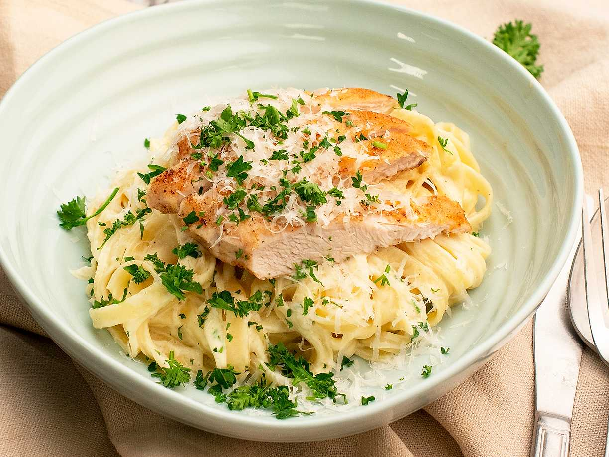

Back to home
Pasta alfredo

traditionally made with fresh fettuccine, butter, and Parmesan cheese to
create a rich, creamy sauce. Here's a simple recipe to make delicious
Pasta alfredo
Ingredients
- 250 g fettuccine (or any pasta)
- 55 g unsalted butter
- 240 ml heavy cream
- 90–100 g freshly grated Parmesan cheese
- 1–2 garlic cloves, minced (optional)
- Salt & black pepper to taste
- 1 tbsp chopped fresh parsley (optional)
steps
- Cook the pasta in salted water
- Melt the butter in a pan.
- Pour in the cream and heat gently.
- Stir in the Parmesan until the sauce is smooth.
- Add the pasta to the sauce.
- Loosen with pasta water if needed.
- Season and serve.
Enjoy your delicious pasta.